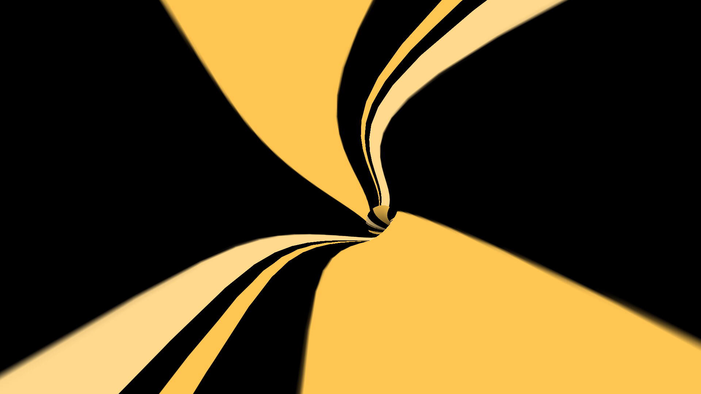

La idea central consiste en llevar a cabo un video-ensayo enfocado en problematizar la relación entre imagen y sonido.
En principio mi objetivo es exponer cómo se construyen relaciones simbólicas a través de las representaciones culturales y paulatinamente se condiciona nuestra mirada instalando distintos arquetipos/estereotipos de forma inconsciente.
Para esto, voy a llevar a cabo un video-ensayo compuesto por múltiples imágenes abstractas sincronizadas con distintas piezas sonoras o efectos de sonido, las cuales, voy a ir complejizando su composición de forma progresiva y las voy a contrastar entre sí. Con esto pretendo que expongan al espectador cómo opera la asociación simbólica entre imagen y sonido, incluso frente a imágenes o sonidos en principio abstractos, pero que en relación producen diversas significaciones.
Por ejemplo, en una de mis primeras búsquedas, propongo enfrentar al espectador a un montaje estructurado en tres instancias.
Primero a un espiral de líneas onduladas de color amarillo y marrón claro y sin sonido (en principio es tan abstracto que no parece significar nada)

Pero si en una segunda instancia se encuentra sincronizado con un efecto de sonido de viento, se comienza a construir un significado, un paisaje desértico.
Sin embargo, como la idea es exponer el medio como constructo, voy a recurrir al contraste, si en vez de fx de sonido de viento, se escucha música árabe, entonces en esta tercera instancia el significado cambia e inmediatamente nos remite a otra "postal", obviamente al estereotipo de medio oriente (construido por la repetición de ciertas imágenes en los medios) y además profundizando, si esta imagen se complementa también con líneas rojas, se remite no solo a esta postal, sino que también se complejiza su significación.
La idea es entonces invitar al espectador a reflexionar sobre cómo estas asociaciones no surgen de forma natural (o única) sino que resultan de un proceso de construcción y de aprendizaje cultural y además sobre cómo el sonido (muchas veces subestimado) puede despertar distintos significados.
Resolume Arena · Adobe Premiere · Adobe Audition · HTML/CSS/JS · Entre otros